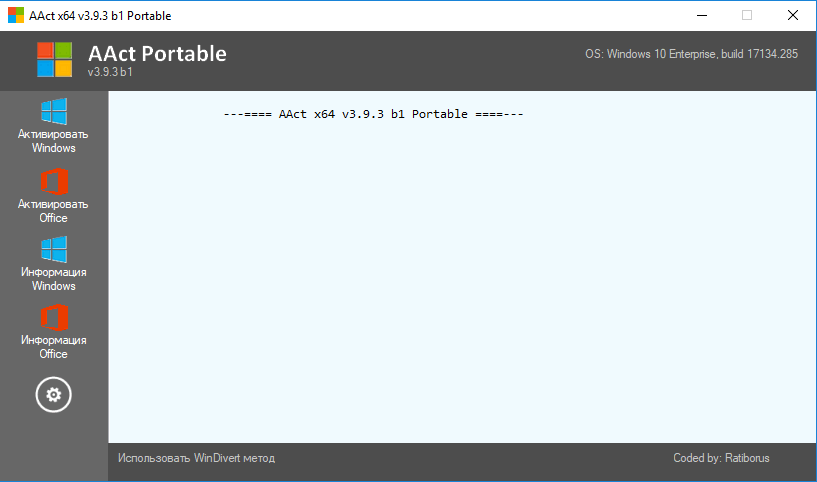

Сдесь вы можете скачать ту или иную программу для активации и настройки OS Windows.

AAct 3.9.2 от Ratiborus
AAct - маленькая программа от Ratiborus, которая как и другие его разработки не нуждается в установке. С ее помощью вы сможете активировать такие продукты от мелкософта как Windows XP и вплоть до 10, а также Office 2010 и вплоть до 2016.
Бесплатный антишпионский инструмент для ОС Windows 10. Портативная утилита предлагает вам самостоятельно решить, какие “удобные” функции Windows 10 угрожают конфиденциальности и должны быть отключены.
W10Privacy - программа, которая отучает Windows 10 от сбора вашей личной информации. Приложение в установке не нуждается, полностью портативное. После запуска считывает параметры и после в главном окне все отображает.
Программа от китайского разработчика, имеющая богатый функционал, плюс она обладает с недавних пор поддержкой Русского языка, что для нас с вами несомненно большой плюс.